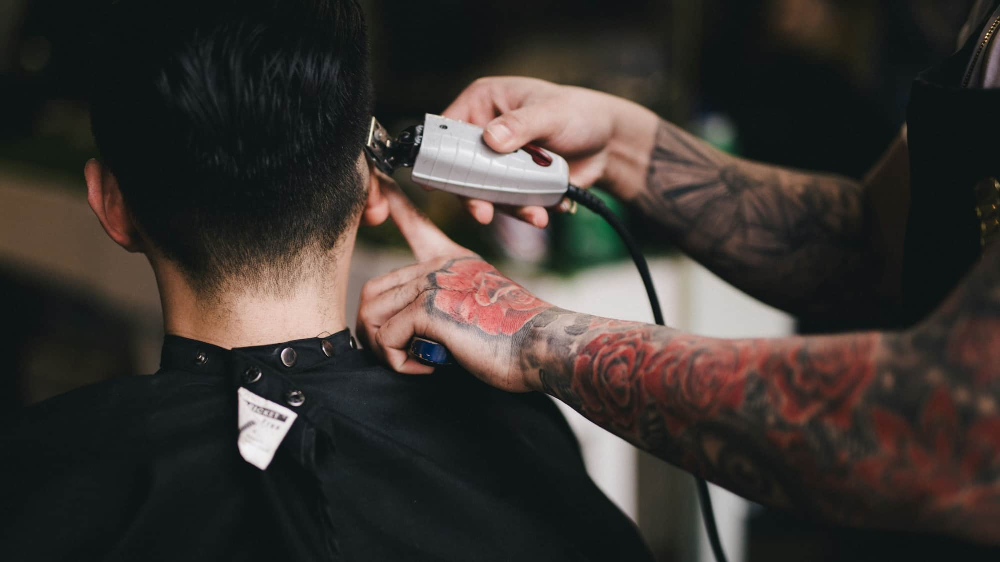
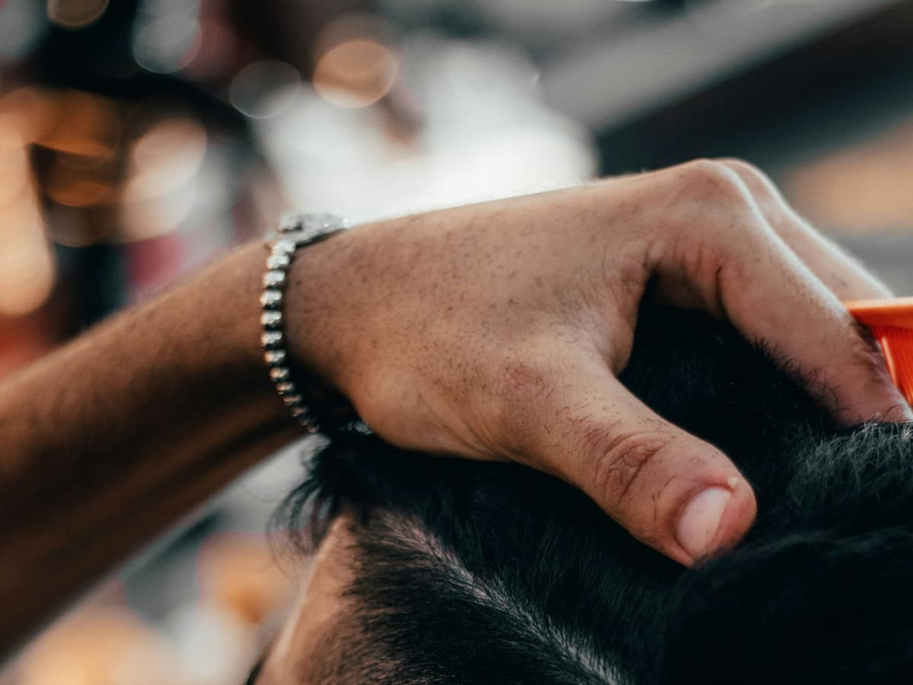
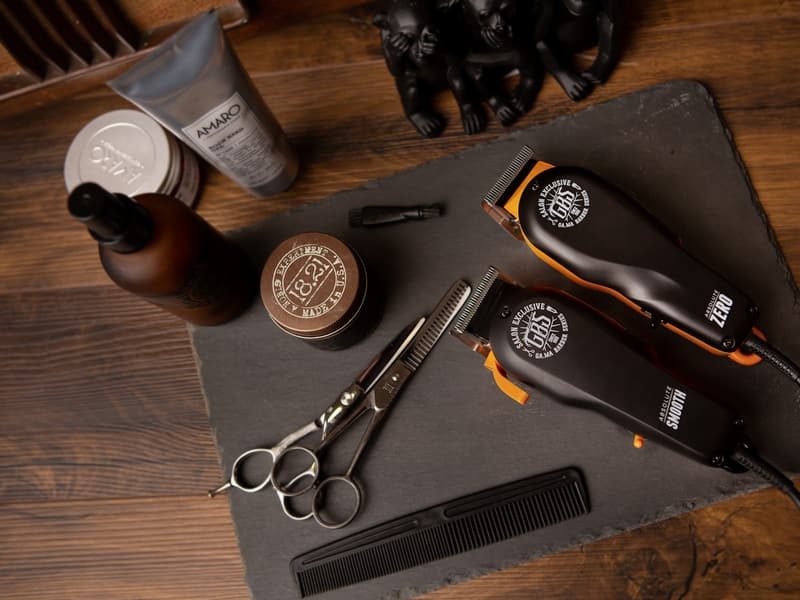

Barber shop · Kielce
Strzyżenie, które trzyma formę do następnej wizyty
Barber shop przy Bukowej 10 w Kielcach. Włosy, broda i klasyczne golenie — robione spokojnie, z dbałością o linie.

Ponad 600 opinii i ocena 4,9 — zbierane wizyta po wizycie
Barber Shop Łukasz Moskwa działa przy ulicy Bukowej 10 w Kielcach. 639 opinii przy ocenie 4,9 to nie przypadek — tyle ocen zbiera się latami, jedna wizyta po drugiej.
Pracujemy bez pośpiechu. Wizyta zaczyna się od krótkiej rozmowy o tym, jak chcesz wyglądać i co realnie da się utrzymać między jedną a drugą wizytą.
Salon nie ma jeszcze własnej strony ani numeru w wizytówce Google — najprościej wpaść na Bukową i umówić się na miejscu.
- 4,9 przy 639 opiniach w Google
- Włosy, broda i golenie brzytwą w jednym miejscu
- Dojazd i parkowanie poza ścisłym centrum
- Doradztwo w cenie wizyty

Zakres usług
Klasyczny barbering dla mężczyzn — od szybkiej korekty po pełną metamorfozę włosów i brody.
- Strzyżenie męskieDobór kształtu do typu włosów i budowy głowy. Maszynka, nożyczki albo jedno i drugie.
- cennik w salonie
- Broda i wąsySkrócenie, wyrysowanie linii i wykończenie. Broda ma pasować do fryzury, nie żyć osobno.
- cennik w salonie
- Golenie brzytwąTradycyjne golenie na gorącym ręczniku, z pianą i kojącym wykończeniem.
- cennik w salonie
- Włosy + brodaKomplet w jednej wizycie — najczęściej wybierane, gdy chcesz wyjść całkowicie ogarnięty.
- cennik w salonie
- DoradztwoCo da się zrobić z Twoimi włosami i czym to utrzymać w domu. W cenie wizyty.
- w cenie wizyty
Cena zależy od długości włosów i zakresu usługi, dlatego podajemy ją w salonie — bez niespodzianek przy kasie.
Rzemiosło, nie filtry



Zdjęcia ilustracyjne na wolnej licencji (Unsplash). Pełna lista autorów i źródeł: CREDITS.md.
Kiedy nas zastaniesz
- Poniedziałek – Niedzielado potwierdzenia
Godziny do potwierdzenia z właścicielem — w wizytówce Google ich nie ma.
Salon nie podaje numeru telefonu w wizytówce Google, więc najpewniejsza droga to po prostu przyjść na Bukową 10.